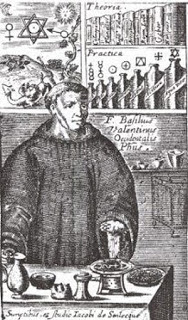
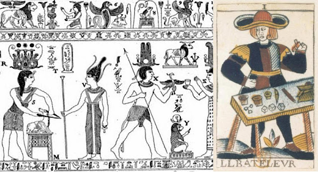
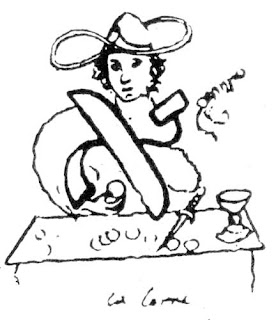
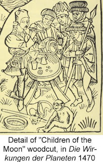

Magician
Today's students of the tarot may recognize the Rider-Waite-Smith imagery, designed for use in divination, as the “classic” tarot. In fact the imagery of the tarot, of which the earliest known mention is in 1440 Florence, Italy, has had a variety of manifestations over the centuries, none explicitly with divination in mind until Etteilla's deck in 1788-1789, about which more later. For centuries the primary, most clearly documented, and possibly only use of the tarot deck was in a trick-taking game, where the cards unique to the tarot, except for the Fool, formed a fifth suit that could beat any card of the other four. The Magician was the first card in the suit so defined; its earliest surviving example is that in a Milanese deck probably of the 1450s. This card will be discussed later; but first there is the question of its title.
The card’s first recorded title, from an Italian list in the late 15th century, was El Bagatella . In the etymological dictionaries, the word is said to be of unclear origin. It is possibly from bagatte, meaning “seller of small things.” There is also bagattino, a small coin, and the Latin bacca, small round thing. For some (although not mentioned in the dictionaries), there is bacchetta, meaning “little stick” (in French, baguette), also the word for a magician’s wand. And besides El Bagatella, there was La Bagatella, meaning "small thing" or “trifle.” With that association, he would differ from a Mago, who was considered to be in league with supernatural powers. The Bagatella merely creates illusions.
The earliest documented use of the term found so far is in a 1298 poem cited by the 18th century historian Ludovico Muratori in Dissertazioni sopra le antichità italiane:
Lassovi la fortuna fella /Travagliar qual Bagattella:Here the Bagatella, like the goddess Fortune to whom he is being compared, is an illusionist and a deceiver.
Quanto più si mostra bella, /Come anguilla squizza via.
(I leave to you wicked fortune/ Who acts like a Bagattella:
Whenever she seems most beautiful,/ She slips away like an eel.)
In French the figure on the card was called the Bateleur, earlier Basteleur, etymologically connected with the French word for “stick,” bâton, earlier baston, and baastel, the instrument of an escamoteur, a conjurer or sleight of hand artist.
Historically in France a bateleur was the quick-handed and fast-talking entertainer who attracted crowds so that he or someone else, as a charlatan, i.e. a non-licensed prescriber, or “empiric,” could sell remedies for which he claimed empirical validity even if he didn’t know why they worked, as opposed to treatments based on theory that the medical establishment endorsed. 16th century engravings of the Piazza San Marco in Venice show them at work on the raised platforms that gave them the name saltimbanco, platform-mounter. Another word for them was Cantambanco, platform-singer. For Muratori, Bagatelle, besides being “trifles,” were the “tricks and games” of the cantambanchi.
Saltimbanco came into English as "mountebank", a term sometimes used by tarot historians to describe the tarot figure. Of an unsavory reputation, in Shakespeare such people could be a source of lethal drugs. Laertes, Hamlet’s foe, relates: “I bought an unction of a mountebank,” such that the merest cut inserting it would bring death. The word occurs again in Comedy of Errors:
They brought one Pinch, a hungry, lean-faced villain,“Juggle” then meant “entertain with jesting, tricks, etc.”.
A mere anatomy [skeleton], a mountebank,
A threadbare juggler, and a fortune-teller...
The Imagery of the traditional card

As for Batons, beside the wooden perch for the falcon shown on the first image in the illustrations, they suggest the fertility of spring and youth (signified by the green club of the Ace or the gloves and sleeves of the courts, as in the Visconti-Sforza Queen and Page, at left, and the related emotion of vigor and enthusiasm, the "phlegmatic" humor. Cups associate to water or wine, which then associate to the water of baptism and the wine of the Eucharist; similarly, in the illustration water is associated, without explanation, with the Catholic Rosary and the "phlegmatic" humor. The suits are then four types of capital, in various senses, for the players to use as they will. And the dealer is a kind of little god giving each player his or her individual sets of choices or opportunities in life.
To the extent that the four types of object also symbolize the four elements, the one who manipulates them is a kind of creator-god, creating new things out of more basic elements. It was quite mysterious how something of the earth could be dissolved (water), burned (fire), turned to vapor (air), and be something different when, in sealed containers, the process was reversed.
 Sometimes the result was healing medicine, other times lethal poison,
occasionally some metal. It was called alchemy, a precursor of modern chemistry.
Asclepius, the Greek god of healing, was in the 14th century typically represented
at a table like the Bagatella’s, with various substances on it and in jars behind it
(containing herbs?), upper left Later the alchemist would be depicted similarly, as at lower right.
Sometimes the result was healing medicine, other times lethal poison,
occasionally some metal. It was called alchemy, a precursor of modern chemistry.
Asclepius, the Greek god of healing, was in the 14th century typically represented
at a table like the Bagatella’s, with various substances on it and in jars behind it
(containing herbs?), upper left Later the alchemist would be depicted similarly, as at lower right.The metaphor easily extends into a spiritual dimension, in more ways than one. The Bagatella at his table, with his round, wafer-like objects and cups, is reminiscent of a priest conducting the Eucharist. The first known Bagatella is not young, and he has baggy eyes and a weary look, like a priest whose admonitions people ignore (see below). At one end of his table is a mysterious object, perhaps a straw hat, out of which he may later pull something, or perhaps it is to cover something, in the way that a cloth covered the Eucharistic cup. If the other objects are the four elements, then perhaps the hat or cloth covers a magical fifth element, the so-called quintessence; for the priest, it was the stuff of eternal life, passing from beyond into the bread and wine. In the French tarot decks of the 17th-18th centuries, the covering is still there, but it is a purse (in the first image in this post compare left with center and right). The 20th century tarots removed all trace of this magical symbol .
A religious metaphor is suggested not only by the table and the Bagatella’s face, but also by that face in relation to other work by the artist of the first known card, Bonifacio Bembo. In his art, similar faces are reserved for the figure of Jesus, who besides being a healer and humble stepson of a carpenter was declared in the Gospel of John to be the one by whom “all things were made” (Jn 1:3). Below, compare the face of the Bembo Magician with of two of his depictions of Jesus done in the same period, one a Coronation of the Virgin (at left below), the other an Ascension.
Other allegories were made. Hugh Latimer, a sometime Bishop in 1529 England, later martyr of the nascent Church of England, preached a pair of “sermons on the cards.” He compared life to a game called “triumph.” This game in England was played with the ordinary deck of four suits, of which one was declared “trumps.” Latimer preached that Jesus was the dealer, that hearts were trumps, and what was needed was to pick up the cards of His commandments with one’s trump - one’s heart - that all might be winners, including Jesus.
 This fifth suit was seen by some, including two Italian authors writing around 1565, as allegories pertaining to the
conduct of life. For Francesco Piscina, he was "l'Hoste" - the Innkeeper - of the "inn of the fool."
Whereas formerly people would go to the "hosteria dello Specchio" - Inn of the Mirror, meaning a place for self-reflection -
now they went to the inn whose sign in front said it was "quella dil Matto," that of the Fool, and people came to enjoy themselves.
For whatever reason, Sicilian cards to this day show a scene on the card that suggests an innkeeper, even if its actual title
is "the young men." Moreover, the jurist Andrea Alciati in 1544 even called the card "Caupo," meaning "Innkeeper," in his listing of the trumps.
This fifth suit was seen by some, including two Italian authors writing around 1565, as allegories pertaining to the
conduct of life. For Francesco Piscina, he was "l'Hoste" - the Innkeeper - of the "inn of the fool."
Whereas formerly people would go to the "hosteria dello Specchio" - Inn of the Mirror, meaning a place for self-reflection -
now they went to the inn whose sign in front said it was "quella dil Matto," that of the Fool, and people came to enjoy themselves.
For whatever reason, Sicilian cards to this day show a scene on the card that suggests an innkeeper, even if its actual title
is "the young men." Moreover, the jurist Andrea Alciati in 1544 even called the card "Caupo," meaning "Innkeeper," in his listing of the trumps.For the other 16th century author, writing anonymously, the Fool card, probably thought of as having the number 0, it was also next to the "Bagattello," with a moral that depended on his having a different profession:
Gli posa appresso il Bagatello, percioche si come coloro, che con prestezza di mano giacando, una cosa per un' altro parer ci fanno, il che oltre alla maraviglia porge vana dilettatione, non essendo il suo fine altro che inganno cosi il Mondo allettando altrui sotto imagine di bello, et dilettevole promettendo contentezza, al fine da guai, et in guisa di prestigiatore non havendo in se cosa premanente ne durabile, con finta apparenza di bene, conduce a miserabil fine.
(He [the deck's designer] placed the Bagattello next to him [the Fool]: because, like those that play with swift hands, making one thing like another one, causing wonder and a vain amusement, in the same way the world attracts the others with images of beauty and delight, promising happiness at the end of trouble. As a juggler [prestigiatore, literally quick-hands artist], it contains nothing, neither permanent nor durable, and leads to a miserable end, under the false appearance of good.)For Anonymous, in other words, the Magician is nothing but an allegory for the deceptiveness of the world. The English word 'juggler" is sometimes used to translate the Italian "prestigiatore"; but it is in only an obsolete sense that this translation works: he is obviously not someone who keeps objects in motion in the air.
Similar to Piscina's comparison of the tarot sequence to an inn, a frontispiece by Hans Holbein in 1523 features a large enclosure in which we see allegorical representations of various virtues and vices and people attending to one or another. It reappeared in slightly different form as the frontispiece to various works published in Switzerland. To that extent it is like Piscina's image of an inn with various entertainments. At the entrance are naked infants, souls waiting to enter life. Before they go in they are greeted by a figure depicted with a large hat and a stick in his one hand. not dissimilar to some versions of the Magician card around that time, such as the Catelin Geoffroy of 1557 Lyon. Below I give Holbein's design, a 1532 variant, and the Geoffroy card.

First you must know that the name of this whole place is the Life. This innumerable multitude surging in front of the Gate are they about to enter into life. The Old Man who holds a scroll and with the other is pointing out something is the Good Genius. To those who are entering is he setting forth what they should do do when they shall have entered; and he is pointing out to them which WAY they shall have to walk in if they propose to be saved in 'the Life.'At the gate there is also a woman who has the souls drink from a cup she is holding; her name is Delusion ("Suadela," Deceit, in the engravings), and her drink is that of "Error and Ignorance." Unfortunately all who enter must take this drink. Both references are to Platonic allegory. Plato taught that archetypes of the Good, the True, the Beautiful, and other perfections were implanted in our minds before birth: the "good genius" is then the agent of such implantation. He also taught that souls were required to drink the "cup of forgetfulness", Lethe, before entering a new incarnation.
In this allegory the "good genius" who implants in us the knowledge of how to live has some of the features of the tarot Magician, both in his appearance and in his role as initiator of the tarot sequence as a repository of wisdom, something each of us has implanted in us from before birth. However as a slight of hand artist the Magician also has the qualities of the lady Delusion who obscures this knowledge.
The 15th-16th century cards after the first known, the Visconti-Sforza, replace the wide-brimmed hat with one less flamboyant. Besides the Catelin Geoffroy, shown above, some examples are the d'Este, the "Dick Sheet" of Ferrara or Venice, and the Cary Sheet of Milan or France. In other cases the man at the table acquired the tassels normally associated with the Fool, as in the Rosenwald sheet, second from left. While there is some resemblance between the tassles of the professional entertainer on the Rosenwald and a wide-brimmed hat, the two are still fairly different. The fourtypes of object have also been reduced to two or three,(except in the Cary Sheet) :in the d'Este, it is famous "cups and balls" game. It is hard to tell what is being depicted in the other two.

Educated people in 17th and 18th century France had an inexhaustible fascination for ancient Egypt. That some people in the 1780s Paris declared the tarot to be of Egyptian origin was only one expression of that interest. That not much was known only increased the value what was known. Besides sketches made by commercial travelers with antiquarian interests, there was the so-called "Bembine Tablet", which had been acquired by Pietro Bembo (no relation to the card-painters) in 1507 and of which sketches were made and avidly passed around. Court de Gebelin refers to it in his famous 1781 article on the tarot's Egyptian origin. What is of interest for this card is the strange horizontal horns that correspond to the TdM Magician's broad-brimmed hat. All the priests have them, and so does a small ram.
In this picture it is the ram that tells us what divinity is being served, and the priests show whom they serve through the visual relationship between their horns and the ram's. The significance of the ram in Egypt had been explained by the Greek historian Herodotus: it is sacred to the high god Amon, because the god himself put on the head of a ram.
The Thebans, and those who by the Theban example will not touch sheep, give the following reason for their ordinance: they say that Heracles [Herodotus' name for the god Shu, a footnote tells us] wanted very much to see Zeus and that Zeus did not want to be seen by him, but that finally, when Heracles prayed, Zeus contrived to show himself displaying the head and wearing the fleece of a ram which he had flayed and beheaded. It is from this that the Egyptian images of Zeus have a ram's head; and in this, the Egyptians are imitated by the Ammonians, who are colonists from Egypt and Ethiopia and speak a language compounded of the tongues of both countries. It was from this, I think, that the Ammonians got their name, too; for the Egyptians call Zeus “Amon”. The Thebans, then, consider rams sacred for this reason, and do not sacrifice them.On the other hand, in Lower Egypt, at the town of Mendes, it was goats that were not sacrificed.
In the "Bembine Tablet", that a goat is being sacrificed doubly confirms that these are priests of Amon.All that have a temple of Zeus of Thebes or are of the Theban district sacrifice goats, but will not touch sheep. For no gods are worshiped by all Egyptians in common except Isis and Osiris, who they say is Dionysus; these are worshiped by all alike. Those who have a temple of Mendes or are of the Mendesian district sacrifice sheep, but will not touch goats.
"And I," said Hermes, "sought to find out what material I was to use, and I called upon the Sole Ruler, and he commanded the souls to hand over the residue of the mixture. But when I received it, I found that it was quite dried up. I therefore used much water for mixing with it; and when I had thereby renewed the liquid consistency of the stuff, I fashioned bodies out of it. And the work of my hands was fair to view, and I was glad when I looked on it. And I called on the Sole Ruler to inspect it, and he saw it, and was glad; and he gave the order that the souls should be embodied."The result of course was much wailing and weeping on the part of the souls thus imprisoned, but they could do nothing. From this perspective, Khnum drops out in favor of Hermes/Thoth as the potter god. It is also an example of how the Magician as Hermes combines the elements, or at least two of them.
1780s Paris: De Gébelin, de Mellet, and Etteilla
In 1781 the French-Swiss antiquarian Court de Gébelin, in the eighth volume of a series named Le Monde Primitif, the Primitive World, advanced his theory that the tarot was Egyptian origin. About the Magician, he points out that the term in French, "Bateleur," derives from "baston", meaning "stick", which of course is the attribute of stage magicians. Gébelin also called him "the player with cups", presumably meaning the game in which one tries to guess which cup the little ball or shell will end up in. In either case he was an illusionist. If the tarot is about life, then the Magician deals with the illusions of life. Gébelin wrote:
"Between the Fool and the Magician, man is not well," Gébelin concludes. This is much like the Anonymous of c. 1565 Italy.At the head of all the trumps, it indicates that all of life is only a dream that vanishes away:that it is like a perpetual game of chance or the shock of a thousand circumstances which are never dependent on us, and which inevitably exerts a great influence on every general administration.
In the same volume of Le Monde Primitif, Gébelin inserted another essay on the tarot, this one by his friend the Comte de Mellet, for whom the tarot was the “Book of Thoth,” the Egyptian god of magic, medicine and wisdom whom the Greeks and Romans identified with their Hermes and Mercury (26). It is then a small step to imagine the Magician of the tarot as such a figure, if not Thoth himself then a follower in his teachings.
De Mellet also outlined a system of divination using the tarot, the first such system in print. It is not, the first system known, as the rudiments of another, associating each card with a specific idea, has also been found in manuscript form buried in a Bologna library, dating to 1750; in addition, there is a record of a woman being subject to legal action for tarot-reading in Marseille of 1759 (27), and divination by the tarot is mentioned in 1770 Paris at the end of a book on fortune-telling with ordinary (28); its author was a print seller named Alliette, writing under the pen-name "Etteilla." As with the system in Bologna, each card was associated with a particular idea designated by a word or phrase. In 1783 the same author published, after some problems with the censor, a list of such words and phrases for all 78 cards. In 1789 he printed his own unique divinatory tarot deck, with upright and reversed keywords printed on each card. It is still in print, with a few modifications. His system remains one layer of modern cartomancy (29).
Etteilla wrote that he learned tarot divination from an old man named Alexis, the grandson of a better known one, also named Alexis but called “Piémontois” (30). There was in fact an “Alexis Piémontois,” a 16th century Italian humanist who published a book of “empiric” medical recipes. He said that in Naples he and others had collected and tested whatever they could find of folk remedies; those that passed were included in the book, which was translated into many languages; the French version is even online, with his French nom de plume (31). Etteilla’s “Alexis” offered a different kind of medicine, “médecine de l’esprit”—medicine of the spirit or mind, whose justification, when all was said and done, was still that it worked. The mountebank of old is becoming the Jungian card-reader of today, hopefully in touch with the archetypal wisdom inside all of us that the cards may help unlock.

Debout, ce no. 15 présage une maladie pour laquelle on dépensera de grosses sommes sans réaltat. Un charlatan viendra enfin, qui, avec une potion légère, vous rendra la santé pour longtemps.For some, it seems, the medical establishment did not have a good reputation.
(Upright, number 15 presages an illness for which one will spend large amounts of money without result. Finally a charlatan will come who, with a light potion, will give you health for a long time.)
Etteilla was the first to explicitly associate astrological signs with tarot cards: he associated his cards nos. 1-12 with the zodiac and the number cards of the suit of Coins, cards nos.68 -77 with the planets and a few other symbols. The appropriate zodiacal symbol was put on each card next to the upper left corner of the picture; in Coins, it was put inside the circles representing coins or below them. As number 15, the Magician card got no such association and no astrological symbol, as can be seen above. (34)
Thus far, the Magician is a mixed bag. Of ill repute and a purveyor of worthless medicines in some Renaissance writings, the historical imagery also suggests a conveyor of wisdom and a healer in the medical sense
The card in modern occultism
Eliphas Levi
In fortune-telling, Etteilla's cards eclipsed the more traditional "Tarot of Marseille" referred to by de Gébelin and de Mellet, until Eliphas Lévi, the founder of modern occultism, included a section on the tarot in volume 2 of his Doctrine and Ritual of High Magic. His account presents the cards in the traditional French order, with much the same subjects as Gébelin, albeit with variations in detail to suit Levi's own purposes.For this card, still of a "Bateleur", he says, in part I of the work (35) pp. 109, 119 of 1930 reprint:
A la première page du livre d'Hermès; l'adepte est représenté couvert d'un vaste chapeau qui, en se rabattant, peut lui cacher toute la tète. Il tient une main élevée vers le ciel, auquel il semble commander avec sa baguette, et l'autre main sur sa poitrine; il a devant lui les principaux symboles ou instruments de la science, et il en cache d'autres dans une gibecière d'escamoteur. Son corps et ses bras forment la lettre Aleph, la première de l'alphabet, que les Hébreux ont empruntée aux Egyptiens; mais nous aurons lieu plus tard de revenir sur ce symbole.For Levi the Magician is now not the simple slight of hand artist of former times, but the Magus of antiquity, almost Hermes Trismegistus himself. He reportedly made a drawing to illustrate the relationship of the card to the Hebrew letter; it appears in a Russian edition of Dogma and Ritual, according to Andriy Kostenko at http://www.green-door.narod.ru/levitarot.html#1, note 1. It is reproduced at right.
(On the first page of the Book of Hermes the adept is depicted with a large hat, which, if turned down, would conceal his entire head. One hand is raised towards heaven, which he seems to command with his wand, while the other is placed upon his breast; before him are the chief symbols or instruments of his science, and he has other hidden in a juggler's wallet.
His body and arms form the letter ALEPH, the first of that alphabet which the Jews borrowed from the Egyptians: to this symbol we shall have occasion to recur later on.
Then on page 119 Levi tells us:
Il n'y a qu'un dogme en magie, et le voici le visible est la manifestation de l'invisible, ou, en d'autres termes, le verbe parfait est. dans les choses appréciables et visibles. en proportion exacte avec les choses inappréciables a nos sens et invisibles à nos yeux. Le mage, une main vers le ciel et abaisse l'autre vers la terre, et il dit: "Là haut l'immensité la-bas est l'immensité encore; l'immensité est l'immensité." Ceci est vrai dans les choses visibles, comme dans les choses invisibles.About the Aleph, the body with raised and lowered arms, he adds (p. 120):
(There is only one dogma in Magic, and it is this: The visible is the manifestation of the invisible, or, in other terms, the perfect word, in things appreciable and visible, bears an exact proportion to the things which are inappreciable by our senses and unseen by our eyes. The Magus raises one hand towards heaven and points down with the other to earth, saying: "Above, immensity: Below immensity still! Immensity equals immensity." This is true in things seen, as in things unseen.)
C'est l'expression du principe actif de toute chose, c'est la création dans le ciel, correspondant à la toute-puissance du verbe ici-bas Cette lettre à elle seule est un pantacle, c'est-à-dire un caractère exprimant la science universelleThe word "pantacle" is Levi's invention, which he defines for us above.
(It is the expression of the active principle of everything; it is the creation in heaven, corresponding to the omnipotence of the word here-below. This letter in itself is a pantacle, that is to say a character expressing universal science.)
Then in Part 2 (p. 345 of 1930 reprint) he says:
L'être, l'esprit, l'homme ou Dieu ; l'objet compréhensible; l'unité mère des nombres, la substance.He is not only the Magus, but the Judeo-Christian God, the metaphysical categories of "being" and "mind," the Pythogorean basis of numbers, and the prima materia of alchemy. With him, too, we get the first explicit mention of the sideways 8, or infinity sign, in place of his wide-brimmed hat," symbol of life and the universal mind [or spirit]."
Toutes ces idées sont exprimées hiéroglyphiquement par la figure du BATELEUR. Son corps et ses bras forment la lettre Aleph; il porte autour de la tête un nimbe en forme de ∞, symbole de la vie et de l'esprit universel devant lui sont des épées, des coupes et des pantacles, et il élève vers le ciel la baguette miraculeuse. ïl a une figure juvénile et des cheveux bouclés, comme Apollon ou Mercure il a le sourire de l'assurance sur les lèvres et le regard de l'intelligence dans les yeux..
(Being, mind [or spirit], man or God: the comprehensible object; the mother unity of numbers, the first substance.
All these ideas are expressed hieroglyphically by the figure of the JUGGLER [BATELEUR]. His body and arms forme the letter ALEPH; around his head he bears a nimbus in the form of symbol of life and the universal spirit; in front of him are swords, cups and pantacles; he uplifts the miraculous rod towards heaven. He has a youthful figure and curly hair, like Apollo or Mercury; the smile of confidence is on his lips and the look of intelligence in his eyes.)
In calling him "the comprehensible object", Levi is defining him not as the God of the abyss, the incomprehensible No-thing about which nothing could be said, but rather the creator-god, first cause of the creation. If the Fool is defined by absence, the zero, the Magician is defined by presence, but also a presence that points to absence, the unseen creator, just as the Bateleur's illusions point to, without in the least beraying, something unseen that causes the illusion.
The Bateleur is also Unity and, more specifically, the "unity of numbers". This is a Pythagorean-Platonic way of thinking. On the one hand, the four types of objects on his table are the four elements, which Plato's Demiurge (37) mixed to form the universe. They are also the combination of talents and circumstances that form the birth conditions of every human. To a Pythagorean this situation is analogous to the role of 1 with the numbers. By successive addition it is the creator of every other number. It also is every other number, inasmuch as every number is an addition of ones. From this point of view it is obvious that the Magician has to be card one. In fact, we might wonder if the image of a magician was put in the sequence precisely for this purpose, to start things off. Pythagorean thinking was hardly foreign to 15th century Italy.
Kabbalistic associations were integral to Levi's interpretation of the tarot. In both Greek and Hebrew the letters were also used as numbers, in order up to ten, with number eleven as "ten and one", and a new letter for twenty, etc.
Besides identifying him with Aleph, he also made the first explicit association between the card and a metal or planet that I have found. In the quotatin: he identifies the Bateleur with alchemical Mercury, as part of a broader thesis that the tarot simply repeats some of the concepts of alchemy. He writes (45), p. 171 of original, part 2:
Les figures cabalistiques du juif Abraham, qui donnèrent à Flamel l'initiative de la science, ne sont autres que les vingt-deux clefs du Tarot, imitées et résumées d'ailleurs dans les douze clefs de Basile Valentin. Le soleil et la lune y reparaissent sous les figures de l'empereur et de l'impératrice; Mercure est le bateleur; le grand Hiérophante, c'est l'adepte ou l'abstracteur de quintessence ...However Lévi did not extend this speculation to astrology or astronomy (47).
(The cabalistic figures of Abraham the Jew, who gave Flamel the initiative of science, are none other than the twenty-two keys of the Tarot, imitated and summarized elsewhere in the twelve keys of Basil Valentine. The sun and the moon reappear under the figures of the emperor and the empress; Mercury is the bateleur; the great Hierophant is the adept or the abstractor of quintessence ...)
We might wonder whether the association to Mercury was Levi's invention or if he was simply repeating common knowledge. In the 15th century, the image of a slight of hand artist, in series of prints or manuscript illuminations known as the "Children of the Planets," was often associated with the Moon, as in the example at right (49). The Moon was identified with the Virgin Mary, taking the place of the Roman Diana. Diana and her nymphs were famous for their virginity; moreover, Diana's cult center was Ephesus, the same place that was associated with the Virgin in her later years. The Virgin was identified in art with the Moon, in that she was represented sitting on the horns of the crescent moon, as in the famous image of the Virgin of Guadalupe. However the association does not actually identify the Bagattella with the moon: he is her "child". Mercury is not the child of the moon-goddess in Greco-Roman mythology; yet in the so-called "emerald tablet" of medieval alchemy, Mercury was held to be the child of the sun and the moon.(49)
A relationship to the god Mercury is also fitting for another reason. Before he was two days old, Hermes (the Greek original of the Roman Mercury) defined himself as a trickster, against his brother Apollo (50). Also, in Renaissance astrology the god governed, among others, people “given to Divination and the more secret knowledge”m albeit sometimes maliciously (50). Since Mercury was associated with eloquence—like that of the mountebank before the crowd--he was also said to govern afflictions of the mouth, throat, and brain, and the herbs to cure these afflictions, as well as herbs that promote divination or have other associations to his myth (51). One example: Lilly says that herbs growing on sandy ground are sacred to Mercury. It was in such ground that the god made Apollo’s cows’ hooves point in the opposite direction to where they were going.
A further association to Mercury is in the Greek' identification of the Egyptian god Thoth with their Hermes. In this context there is also, of course, the legendary Hermes Trismegistus, Thrice-Great, who was imagined either as a descendant of Thoth or somehow the embodiment of the god himself.
Paul Christian
Levi's follower Paul Christian, in 1863 and 1870, continued most of Levi's characterizations, but reconciled apparent contradictions by saying that the card has meaning on three levels: divine, intellectual, and human (36, p. 114):
A = 1 exprime dans le Monde divin l'Être absolu, qui contient et d'ou émane l'infini des possibles. Dans le Monde intellectuel, l'Unité, principe et synthèse des nombres; la Volunté, principe des actes. Dans le Monde Physique, l'Homme, le plus haut placé des êtres relatifs, appelé à s'élever, par une perpétuelle expansion de ses facultés, dans les sphères concentriques de l'Absolu.While Levi emphasized what he considered the Jewish aspects of the tarot, (how a woodcut card representing God was permitted by the first commandment, "though shalt.not make graven images" is not explained). Christian claimed to find the Egyptian symbols, including a 22 letter alphabet that like the Hebrew letters did double duty as numbers. Not surprisingly, they are rather similar to their Hebrew counterparts; after all, the Jews had spend many years in Egypt.
L'arcane 1 est figuré par le Mage, type de l'homme parfait, c'est-à-dire en pleine possession de ses facultés physiques et morales.
(A-1 expresses in the divine world the absolute Being who contains and from whom flows the infinity of all possible things; in the intellectual world, Unity, the principle and synthesis of numbers; the Will, principle of action; in the physical world Man, the highest of all living creatures, called upon to raise himself, by a perpetual use of his faculties, into the concentric spheres of the Absolute.
Arcanum 1 is represented by the Magus, the type of the perfect man, in full possession of his physical and moral faculties.)
Christian took over Levi's imagining of the card but with some differences:phrases it in terms of moral imperatives (Ibid):
La main droite du Mage tient un sceptre d'or, figure du commandement, et s'élève vers le ciel, en signe d'aspiration à la science, à la sagesse, a la force. La main gauche étend l'index vers la terre, pour signifier que la mission de l'homme parfait est de régner sur le monde matériel. Ce double geste exprime encore que la volonté humaine doit refléter ici-bas la volonté divine, pour produire le bien et empêcher le mal."Will" is in fact the one word that Christian uses to sum up the meaning of the card. Other details are his belt of a serpent biting its tail, to represent eternity, a cubic stone instead of a table, and a cross engraved on the coin. He does not tell us what the stone represents until discussing Arcanum IV, the Emperor, where as "the perfect solid it "signifies the accomplishment of human labors". The cross "annonce la future ascension de cette puissance dans les sphères de l'avenir" ("announces the future ascension of this power [the power of the will, which the coin signifies] into the spheres of the future").
(The Magus holds in one hand a golden scepter, image of a commend, raised toward the heavens "in a gesture of aspiration towards knowledge, wisdom and power. The index finger of the left hand points at the ground, signifying that the mission of the perfect man is to reign over the material world. This double gesture means that human ought to be the embodiment of divine will, promoting good and preventing evil.)
Unlike Gebelin, who presented the traditional Platonic/Stoic scorn of the physical world, "in which nothing depends on us" (38), for Christian the material world was the sphere of action, of which the Magician is the rightful master who imposes his will upon it.
Levi's image of the arms raised above and below, actually more vivid than Wegener's, is depicted in Waite's version (far right). Waite says of it (40):
This dual sign is known in very high grades of the Instituted Mysteries; it shows the descent of grace, virtue and light, drawn from things above and derived to things below. The suggestion throughout is therefore the possession and communication of the Powers and Gifts of the Spirit.Here, like Levi, he is not so effusive about mastering the material world as Christian. Waite goes on about the magic powers of the sideways 8.
The mystic number is termed Jerusalem above, the Land flowing with Milk and Honey, the Holy Spirit and the Land of the Lord. According to Martinism, 8 is the number of Christ.Papus
Papus, following Christian in 1889, returned to Levi's orientation toward the Hebrew letters, as opposed to Christian's Egyptian letters. His only concession to Egypt is seeing the myth of Osiris, Isis, and Horus in the cards, in which card one is Osiris. For him Christian's three levels (divine, intellectual, physical) then become God (Osiris), Man (Adam), and the Universe (the Natura Naturans, "nature naturing", a term borrowed from Spinoza, meaning the universe as a self-forming and evolving creation).
Besides continuing Levi's associations to the Hebrew letters, he also assigned the Magician to the sephira Kether, Hebrew for "Crown" and the highest sphere on the Kabbalists' Tree of Life (Levi himself, in Dogme et Rituel, part 2, p. associated Kether with the World card). In either case Kether is the source of initiative in all the areas expressed by the rest of the Tree. (52).
He also made the four objects prefigurations of what for Papus is the basic pattern of the tarot, which is to go from active (Osiris, the wand, and the Magus) to passive (Isis, the cup, and the Popess), followed by their equilibrium (Horus, the sword, and the Popess, with Horus bird on the her shield) and transformation (the coin and the new Osiris, the Emperor).
For the contemporaneous but English Golden Dawn, in contrast to the French occultists' Aleph and Kether, the Magician was associated with Beth and the path between Kether and Binah. The online Lleweleyn Encyclopedia says (53):.
The Path of the Magician connects Kether to Binah and is the beginning of material production. The letter Beth means house, and the Magician himself is the house in which the Divine Spirit dwells. He is the director of channeled energy. ... The paths of Beth and Mercury link Kether, the Crown, with Binah. The Magician, therefore, is reflected in the Intellect which stores and gathers up knowledge and pours it into the House of Life, Binah. ...It can help you to develop your ability to express yourself in public, as well as the ability to think clearly. It helps you to develop your intellectual mind, your creativity, your writing ability, your love of science and books, and your effective use of memory.Binah means "understanding" or "intelligence"; hence the emphasis on "knowledge", and a characterization of the card in terms of clarity of thought. This emphasis is not shared by Levi, Christian, and Papus, who seem to see the card as creativity, initiative, and will power, including the use of intellect, perhaps in certain tools on his table (the sword of intellect or the cup of knowledge), among other things.
Paul Foster Case
The identification with Beth is seen explicitly in the card of Paul Foster Case, which otherwise is similar to Waite's. He writes (Lesson 6, p. 1):
...the earliest form of the letter Beth was a picture of an arrow-head, The sharpness of an arrow-head suggests acuteness and power to penetrate. Thus Beth is a symbol of the mental qualities of nice perception, keen and penetrating insight, and accurate estimation of values.There is also the meaning of Beth as "house", he says (Lesson 5, p. 2):
The fundamental mood represented by this form of the letter, connected as it is with hunting and warfare, is alert intentness. Right use of the mental powers pictured by the Magician calls for alert, watchful atten-tion to the succession of events constituting waking experience. ...
An arrow-head hasas no energy of its own. The force whereby it cleaves the mark is a derived force. The arrow is merely the means whereby power is transmitted. An arrow-head is an instrument which transforms propulsion into penetration. It specializes bow-force into arrow-force.
The letter-name means ”house,” which is a definite location used as an abode. In the sense used here, it refers to whatever form may be termed a dwelling-place for Spirit, and the form particularly referred to in this lesson is human personalaty, for Personality is a center through which the Spirit or real Self of man expresses itself. Do not be abstract about this . Think of your personality as a center of expression for your own inner Self. Try to realise that this is what Jesus meant when he said, "The Father who dwelleth in me. He doeth the works.”With this, his interpretation of the card is rather clear (Lesson 5, p. 1):
Geometrically the number 1 is a point, particularly, the CENTRAL POINT. In the Pattern of the Trestleboard, the statement attributed to 1 is: "I am a center of expression for the Primal Will-to-good which eternally creates and sustains the universe.” The beginning of the creative process is the concentration of the Life-power at a center, and its expression through that center.It is perhaps of interest that the "primal will" here is not a limitless set of possibilities, but limited to those that tend toward the good: it is a "will-to-good". How does that focus come about? It is precisely through the concentration of Life-power through careful attention to "the succession of events constituting our waking experience" (lecture 5, p. 3):
The practice of concentration enables one to perceive the inner nature of the object of his attention. This leads to the discovery of natural principles. By applying these, one is able to change his conditions. Hence concentration helps us solve our problems.Better said than done! In the context of problem-solving (lecture 5, p. 1):
Self-consciousness initiates the creative process by formulating premises or seed-ideas. Subconsciousness accepts these as suggestions, which it elaborates by the process of deduction, and carries out in modifications of mental and emotional attitudes, and in definite changes of bodily function and structure.He puts the point about "seed ideas" in another way in the next lecture, as the context for the creataive process:
By determining what you want to be and do, you have taken this first step. You have set a mark at which you aim the whole energy of your life.The Magician card pertains to the first part, the formulation of seed ideas for one's life. The Popess and the Empress have to do with actualizing these ideas in action. This is the process that Papus called Active/Passive/Equilibrium, between Magician/Popess/Empress. But for Case it is different (lecture 5, p. 4):
One important point to observe is that the Magician himself is not active. He stands perfectly still. He is a channel for a power which comes from above his level, and after passing through him, that power sets up a reaction at a level lower than his.It is the movement from Spirit, symbolized by the upside down 8 as infinity sign (lect. 6, p. 5), to Matter, with the Magician in between. However the active Spirit seems to be the Fool, leaving the Magician as an especially attentive observer of one's inner experience. Put in another way (lect. 6 p. 3):
the act of establishing contact with super-consciousness is the highest and most potent use of self-conscious awareness.The Magician is helped by the objects on the card. The wand symbolizes libido, which can be experienced sexually but in the Magician's hands is transmuted into mental forms (lect. 6, p. 4):
First we observe what goes on. Then we use inductive reasoning, reasoning from Observed effects to inferred principles, to reveal that lies hidden behind the veil of leads to the discovery that the succession of events of which our personal experience is a part is under the direction of a supervising Intelligence, higher than the objective mind of man.
THE PRACTICE 0F MENTAL CREATION AND CONSTRUCTIVE THINKING AUTOMATICALLY TRANSMUTES THE DRIVE OP THE LIBIDO FROM PHYSICAL FORMS OF EXPRESSION TO MENTAL FORMS WHICH RELIEVE BOTH PHYSICAL AND PSYCHICAL HlESSURES, SUCH AS ACCUMULATE WHEN THIS ENERGY IS NOT UTILIZED.The wand is thus naturally associated with the element of fire. He continues (lect. 6: p. 7):
The cup, made of silver, metal of the Moon, is a symbol of memory and IMAGINATION, and of the element of water. The sword, of steel, is related to Mars; and stands also for ACTION, and for the element of air. The coin or pentacle is related to Saturn; and it also represents FORM, and the element of earth.These four tools also represent the power of the Word, in particular that of JHVH, one letter for each tool.
Finally, one result of contentrated attention is the realization of our essential connection to others (lect. 6, p. 10).
In partly developed persons the objective mind creates the illusion that the SELF is peculiar to a particular personality— that the personal "self” is a unique identity, separate from all others. Concentration and meditation lead to freedom from this illusion, by enabling us to see that it is an illusion. When you cane to this recognition, you will no longer think and act as if you were a separate being. Then you will know that your personality is an instrument through which the One Force typified by the Fool finds expression.I for one do not trust my "inner Fool", no matter how carefully I might attend to it. It has fooled me too often. And I am not sure that this is only a personal problem about me. I will address these worries later.
Oswald Wirth
Wirth writes from the perspective of a more traditinal imaginging of the card, that of the Tarot of Marseille, but interpreting it in a manner consonant with Levi and Christian. Like Levi, he sees the posture as conveying the shape of Aleph. The hat, as in Levi's drwing, resembles the infinity sign and is not replaced by it. Morever, the wand does signify the concentration of energy, not from above as for Case, but from "his surroundings", in the direction of the coin, supplemented by his "personal energy" emanating from index finger of his right hand. He has combined the gesture analyzed by Case with the traditional gesture of the TdM, in which the wand invariably points to the coin.
Wirth expresses the three levels of meaning somewhat differently than Papus and Christian. On the divine level it is indeed God, but it is God "seen as the great suggestive power of all that is accomplished in the Cosmos". So it is an immanent God, not a transcendent one, and Papus's two levels, divine and physical, become one. The level of Man still exists, but as "the seat of individual initiative, the cener of perception, of conscience, and of will power". This is perhaps more inclusive than Case's conception, in that conscience is there from the beginning. As for Case, the Magician represents the development of the "I", the ego, which again is defined as "the mission to create oneself". However the Magician is not motionless, as he is for Case, but continuously active.
One feels that the Magiian cannot stay in repose. He plays with his wand, he monopolizes the attention of the spectators and dazzles them with his continuous juggling and his contortions, as as much as by the mobility of his facial expressions. Moreover, his eyes shine with intelligence and have long lashes which accentuate their sparkle.This is the development of the ego as an object for others, what Jung would call a persona, the face we present to others. Whereas the Fool lacked discretion, the Magician is all discretion; he manipulates his audience carefully according to a hidden plan. His activity is mere distraction. In that way, too, he is like the self-creating universe, acting according to hidden laws and plan. Inside himself, he includes the entire time-frame of the universe he has created and so is at rest.
Like the other theorists, Wirth identifies the four objects with the four suit-signs and the four elements. However he also identifies them with a magical formula: To Know (cup), To Dare (sword), To Desire (wand), To be Silent (pentacle). Then the initiated Magician has accomplished four victories:
The victory won over Earth awards us the pentacle, that is to say, the vital point of support for all action needed.There thus seems to be a beginning-Magician, creating his ego/persona, and an end-Magician, which merges with the divine.
By confronting Air with audacity the knight of Truth wins himself the Sword, symbol of the Word which puts to flight the phantoms of Error.
To triumph over Water is to conquer the Holy Grail, the Cup out of which Wisdom drinks.
Tested by Fire, the Initiated obtains at last te emblem of supreme command, the Wand, the king's scepter for he reigns through his own will merged with the sovereign will.
The Jungian turn
Sallie Nichols in Jung and Tarot contrasts the Fool and the Magician as different expressions of the Trickster archetype. Unlike the Fool, who embodies this archetype in a spontaneous, unthinking way that makes us laugh, the Magician "is interested in discovering the one creative principle behind diversity, so as to manipulate nature and harness its energies," originally for the purpose of meeting human needs and hopes (54) But he is not an engineer applying what can be rationally comprehended by science. She quotes Jung writing about the Rhine parapsychological experiments (55):
..the test person being confronted with a seemingly impossible task finds himself in the archetypal situation which so often occurs in myths and fairy tales, where a divine intervention, i.e. a miracle, offers the only solution.It is the "archetype of the miracle" or "archetype of the magic effect." She continues:
It is understandable that the Magician, who lives in the depths of the psychoid level of the unconscious where there exist no divisions of time, space, body and soul, matter and spirit (and where the four elements themselves have not been separated out of the void), should have the power to put us in touch with the great Oneness of perfection, health, and harmony. But since this great void is also the Whole from which all will be born, it of necessity contains all opposites.By "psychoid" Nichols means that the psyche, which bridges mind and body, is also neither, but in a realm largely unknown to us. She quotes Arthur Eddington, the astrophysicist: "Something out there - we don't know what - is doing something, we don't know what" (56). If that is what is "really real," then what we see is the illusion produced by that reality, and one who accesses the psychoid can produce wonders. The miracle-worker is then that part in us that actually has the power to accomplish them, in the sense of acts beyond ordinary human experience. "Who would have thought we could fly to the moon?" Nichols asks.
One comparison she makes is to Prospero in The Tempest (63). A practicing Renaissance Magus, he conjures up a storm to punish those who had underhandedly deprived him of his dukedom, then allows his air-spirit slave Ariel to set them safely on dry land, and in the end grants them forgiveness and frees Ariel, thus, Nichols says, abandoning his "black ends." In the same way the playwright himself has been creating with his words the illusion of a world, in which we can see our own desires for triumph over others exposed and, if we lay them aside, forgiven At the end Prospero says he is done with magic, and of course the play is the playwright's last.
Along with words, the tarot Magician uses the small objects he carries around with him. With his hands as well as a never-ending stream of words, he creates illusions, in an art so practiced that it appears effortless (64), like that of Prospero's air-spirit Ariel. Words and objects used in service of imagination can be used to deceive as well as enlighten, of course; the "willing suspension of disbelief" that the audience participates in, whether in enjoying a stage magician or an artistic production, can also be misused in creating illusions that are taken for reality, and as metaphors that do not apply to the reality they are dramatizing.
Something in us, a kind of inner playwright, creates stories every night when we dream, albeit sometimes rather chaotic ones (65). In this sense the Magician is the unconscious becoming conscious, if only we write down the dream and engage with it in imagination (Jung calls it "active imagination"). The unconscious takes images from our past - or projects them on neural firings - and shapes them into new forms and situations, with little attention to realism in time, space, and causality.
Nichols urges us, like Jung, to pay attention to the magic in everyday life, in particular the "synchronicities" that occur in our lives, meaningful coincidences that happen without any causal connection between events (66). Like with the magician's tricks, the associations are as though stepping outside ordinary causality. even if in fact they are not but are merely our own unconscious projections. onto what is in front of us. As such, however, they express what the unconscious, coming from some psychoid reality, somehow wants to tell us, for us to use in our conscious lives.
If the Magician "contains all opposites," that includes masculine and feminine. We may think here of the round object in one hand and the stick in the other, pointing at the round object. Nichols' image is of the finger of God giving life to Adam in Michelangelo's Sistine Chapel (57). But she rejects the idea that the Magician is "the original Life Power acting on matter": rather, "it is the result of the Life Power acting upon itself" (58). The external is part of a larger whole, and creation is co-creation by the creator and the created. She finds in Rodin's "Hand of God," at left below, an expression of this idea (59)

For Jung Mercury makes his appearance by way of the alchemical Mercurius, both a "world-creating spirit" and the transformative agent trapped in gross matter". (61) Bringing to consciousness this "cental sun of our inner nature" can change us as individuals and transform human nature. At the same time the alchemists saw Mercurius also as a great poison and bringer of death: If it contains all opposites, that includes what Jung called the shadow, "qualities in ourselves which we prefer not to think of as belonging to us" (62).
There is then a problem. If the life-force is Mercurius, we cannot assume that it is benigh and always acts for the best. The shadow acts in us without our awareness and can even masquerade as an angel. In "The Spirit Mercurius, Jung in 1942 characterized Mercurius as a storm god, the Wotan of the Germans, obviously referring to the spirit that had taken over Germany at that time. Reflecting on the fairy tale about a boy who finds a bottle containing the "spirit Mercurius," whom he lets go in exchange for certain magical powers, he observes nothing is said about what happens with the spirit (63):
What happens when the pagan god Hermes-Mercurius-Wotan is let loose again? Being a god of magicians, a spiritus vegetativus, and a storm daemon, he will hardly have returned to captivity...The bird of Hermes has escaped from the glass cage, and in consequence something has happened wich the experienced alchemist wished at all costs to avoid. ... They wanted to keep him in the bottle in order to transform him; for they believed, like Petosios, that lead (another arcane substance) was "so bedeviled and shameless that all who wish to investigate fall into madness thorough ignorance." The same was said of the elusive Mercurius, who evades every grasp - a real trickster who drove the alchemists to despair.
A magician, like a scientist, may like to think his magic is serving human needs. But one human "need" or "hope" may not jibe with another's, for example in love-spells. Also, if we think of ourselves as great Magi, channels for something outside ourselves to work miracles, the shadow is the part that knows we are not so great as all that, nor so pure. I do not think she deals with the shadow-aspects of the Magician sufficiently. She talks about the shadow in the tarot as "the Devil," but the Devil on that card is not in shadow: his horns are visible to all. It is precisely the shadow that is always behind us when we are facing the light. How is the Magician to learn to recognize his shadow? If not at the beginning of the sequenfe, then maybe its end.
There are two other points of Jungian commentary I might make. At the beginning, the Magician's task is the development of a persona, the ego's expansion into the world while keeping something back from that world. The danger, of course, is identifying with that persona. Then one does not see the shadow.
On the other hand, it is that very hidden part that forms the basis for further development, simply by being inner.
The other point, which has been made by many, is the parallel between the four objects and the four Jungian functions: wands and fire with intuition, swords and air with thinking, cups and water with feeling, and pentacles (coins) and earth with sensation. These, which are also two pairs of opposites (intuition/sensation and thinking/feeling) are then the tools for the development of consciousness, trained mostly outside in the world during the first half of life, and then inside in the second half, with different functions dominating in each of the two. This shift will be examined in more detail in connection with the Devil card.
Finally, I might contrast the Marseille version with that of Waite and Case. Case emphasizes the focusing power of the right hand holding the wand and the left hand with its finger as the directing intelligence of long practice and habit, in between which is the attention of the Magician. In the Marseille card the wand focuses attention, too, but for the purpose of
manipulating the audience, distracting them so that their attention will
go to the place the magician wants them to look, while he does
something else elsewhere. This is Hermes as trickster.
On the other hand, I have seen rituals where real magic might be involved. They, too, focus attention on particular objects to be invested with magical power. It is usually by means of prayer, perhaps with the ringing of bells and the burning of incense, to create a sacred space in which the Holy Spirit can descend, singling out an object or person as the recipient of Spirit, by the laying on of hands, or blowing over a vessel, or elevating it, or mixing different ingredients, with special words to create the spell and to ask for a certain result.
In that way the Marseille magician emulates the action of a priest at the table in which the miracle of transsubstantiation. The esoteric meanng of the exoteric trickster, who moves incessantly and with a patter of words, is the priest of the mass. Psychologically speaking, it is the effect on those who partake of the ritual, it is psychological magic, but healing and purifying all the same. His actions have a symbolic meaning, too; the phallic wand and swords combining with the womblike coin and vessel, or indeed the five-petaled rose (matching the five points of the pentacle) and the vessel-like lily on the card of Waite and Case, even if they themselves do not articulate such an interpretation of those features.
From that perspective the Marseille Magician's red-centered hat resembles a red sun, the symbolic equivalent of the red roses at the top of Case's cards plus the infinity sign above the Magician's head. In the case of the Marseille card, however, it is not infinity (which did not have a special sign before 1655) but rather Mercury's caduceus, symbol of the herald, on its side. Just as Mercury brings the upper world to the lower and vice versa, so the Magician brings the upper to the lower and vice versa, as is said in the Emerald Tablet, "Superior from inferior, inferior from superior, working the miracles of the One". And while the plants below Case's Magician are feminine symbols corresponding to the pentacle and goblet on his table, recipient's of energy sent down by the phallic wand and pointing finger, those below the Marseille Magician are more various: feminine at our left, masculine in the center, and both together on the right. As feminine they receive energy from above; as masculine they send energy above in their turn, a process of "co-creation", as Nichols put it.